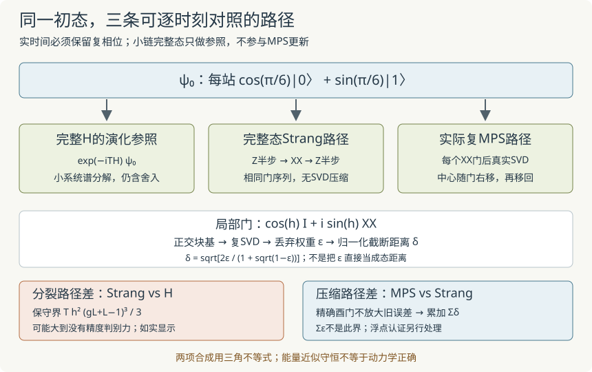

本页目录
基础衔接 16 · 张量时间演化：怎样把一小步误差带到整段轨迹？
先修：两站点截断、MPS正交中心、全链方差与初态。静态求最低能量与实时演化是不同问题。本讲实际施加复数酉门、更新MPS并截断，再把时间分裂、压缩和浮点问题分开。
1. 先把模型和单位固定
取开放Ising链、Pauli本征值±1，令J=ℏ=1：
时间以ℏ/J为单位。初态固定为每站60°的乘积态：
我们要近似\(e^{-iTH}|\psi_0\rangle\)，而不是逐步重新求H的最低态。即使初始系数全实，实时演化通常也会产生复数相位，不能沿用实数张量代码而忽略虚部。
A内部的各项相互对易；B内部的XX项即便共享一个站点也相互对易，因为共享位置都是同一个X。但A与B一般不对易，这正是本例时间分裂误差的来源。
2. 二阶分裂变成哪些真正的门？
取步长\(h=T/m\)，使用对称Strang一步
右边先作用：半步Z、整步XX、再半步Z。单站门是
由于\((X\otimes X)^2=I\)，两站点门有闭式
所以合并中心\(\Theta_{\lambda st\rho}\)后，程序实际执行
B内部的门对易，可以按从左到右的键顺序逐个施加。有截断时，门之间插入了非线性的压缩操作，不同更新顺序仍可能产生不同近似；不能由精确门对易推断所有截断轨迹相同。
3. 每次SVD之前，正交中心必须在正确位置
把合并张量整理为矩阵\(M_{(\lambda s),(t\rho)}\)。若左右块基正交，它的Frobenius范数才等于完整物理态的范数。对复SVD
保留最大的χ个奇异值，归一化后把U留在左站，将\(\Sigma V^\dagger\)送往右站，中心随门一起右移。
每个时间步的实际流程是：半步单站Z门 → 从左到右逐键XX门与SVD截断 → 半步Z门 → 从右到左无截断地把中心移回首站。最后这次规范变换保留已有键秩和全部有效方向，只改表示，为下一步准备正交块基；它不是额外的物理演化或压缩。
本实现直接用复数列的Jacobi SVD，内积含共轭。保留块和丢弃块的范数由实际分解结果计算；没有把完整波函数重新分解来冒充局部张量更新。网页另外展开4或6站完整波函数做小系统参照及观测，因此整个演示仍有\(2^L\)规模的参照成本，不是可直接扩展到长链的生产库。
4. 单次丢弃权重怎样变成态距离？
对归一化的门后态，Schmidt权重满足\(\sum_k\sigma_k^2=1\)，定义
归一化压缩态\(|\widetilde\psi\rangle\)与原态采用SVD自然给出的相位，则重叠为\(\sqrt q\)。因此
最后一个写法在ε很小时避免直接用两个接近1的数相减。小ε下\(\delta\sim\sqrt\epsilon\)，不是ε。
现在把同一门序列的无压缩态记作ψ_k，压缩态记作φ_k。第k个门U_k为酉，压缩造成实际距离δ_k，三角不等式给
从同一初态出发，迭代得到
没有假设误差相互独立或相位随机。\(\sum\epsilon_k\)不能直接替代这个态距离界；平方误差一般也不能不加理由地直接相加。界依赖精确正交块基与精确SVD，实际浮点影响稍后另列。
5. 不只写O(h²)：给一个有常数的全程分裂界
这里用有限有界矩阵给出保守证明，避免把渐近记号当成可用误差数字。设\(a=\|A\|\)、\(b=\|B\|\)，比较S(t)与\(U(t)=e^{-it(A+B)}\)。在t=0处直接求导，二者的0、1、2阶导数相同。A、B为Hermitian，实时间上的指数均酉；乘积三阶求导的Leibniz公式给
同时\(\|U^{(3)}(t)\|\le\|A+B\|^3\le(a+b)^3\)。Taylor积分余项于是给
m次相同酉步的望远镜展开不放大每一项，故对T=mh>0，
本链可取\(a=gL\)、\(b=L-1\)。两者分别由共同Z本征态与共同X本征态达到；边界是开放链，所以只有L−1个XX项。由此得到网页显示的
它的常数很松，可能大于归一化态距离的平凡界2。这时它没有有效的精度判别力，不应把“算出了一个界”说成“精度已经足够”。利用局域对易子结构可得到更紧界，但本讲的数值保证仅使用这里已证明的保守版本。
把压缩与分裂连接起来，在上述精确算术假设下，
浮点运算若有累计认证界，还应加上那一项。本页没有完成严格浮点误差传播，所以不把公式界宣称为对每个浏览器浮点输出的无条件证书。

6. 三条轨迹必须在同一时间轴比较
网页同时保留三种对象：实际复MPS演化、完整波函数执行同一Strang门序列、完整Hamiltonian谱分解给出的演化参照。第三种方法只有浮点对角化精度，不是任意精度符号答案。MPS更新不读取后两者来选择张量。
三种态距离均从相同初态和相位约定计算；它们满足三角不等式，通常不满足相加等式。全局相位不影响物理观测，因此表格还给不保真度\(1-|\langle\psi_{\rm exact},\phi\rangle|^2\)（两态均先归一化）；不要把全局相位距离直接当作可观测差异。
默认L=4、g=1、χ=2、T=1、10步：
| 量 | 数值 |
|---|---|
| 步长h | 0.1 |
| 初始／最终能量 | −4.25／−4.253835394 |
| 最终平均Z磁化 | 0.691244034 |
| MPS对精确演化的态距离 | 0.049018085 |
| 纯Strang态距离 | 0.008251243 |
| MPS对同一Strang序列的距离 | 0.050415024 |
| 累计丢弃权重 | 0.000581000 |
| 累计截断态距离界 | 0.053480642 |
| 保守Strang界 | 1.143333333 |
先保持χ=2，把时间步数加倍；再保持步数不变，把χ提高到4。L4时χ4足以容纳任何态，压缩路径差应降到浮点量级，剩余主要是Strang误差。此时把8步改成16步、再改成32步，可以看见误差约以四倍下降。L6要χ8才能对所有键容纳完整态。
无脚本后备：默认数值见上表。χ4/L4消除实际截断以后，缩小步长主要检查二阶时间分裂；χ1会产生更大的压缩误差。累计丢弃权重0.000581不能被当作态距离上界，因为实际压缩路径差约0.050415。
7. 浮点检查与适用边界
独立验算使用NumPy复SVD和SciPy完整矩阵指数，对每个时间步的能量、磁化、范数、三条误差、每次丢弃权重逐项比较，并检查每次门更新后的左右正交块。一般复矩形矩阵也用于核验分解和保真度恒等式；不能只在实数或所有项对易的模型上测试。
数值线性代数本身会制造假误差：先形成MM†再求SVD会平方条件数。本页直接对复列做Jacobi旋转，仍不宣称达到任意精度。约10⁻¹¹以下的态差结合独立参照与规范误差解释；公式中的精确SVD和酉性不能未经检查地替换成“电脑总会精确做到”。
更大L、更长T、纠缠快速增长或更一般Hamiltonian需要新的资源与误差分析。固定χ下减小h不必让整个MPS结果任意精确：压缩仍在，门与压缩的总次数也增加。本文不提供长期高精度或任意多体系统的普遍保证。
8. 两道迁移题
题一。 100次压缩各丢弃\(\epsilon=10^{-6}\)。仅知道这些数字，能否把总态距离保证在\(10^{-4}\)？用本讲方法给出一个有效上界，并解释它为什么可能远大于实际误差。
查看答案：需要累加的是态距离
每次\(\delta=\sqrt{2\times10^{-6}/(1+\sqrt{1-10^{-6}})}\approx0.001000000125\)。总距离界约0.1000000125，而不是\(100\epsilon=10^{-4}\)。三角不等式按所有误差朝同一最坏方向累加；实际演化中方向可能抵消，所以它可很保守，但在没有额外信息时不能擅自假设抵消。
题二。 H=Z、初态\(|+\rangle\)。错误程序始终输出初态不动。它报告能量恒为0，这能验证动力学正确吗？比较正确与错误的\(\langle X\rangle(t)\)。如果固定χ的MPS已几乎不再随h变化，又能得出什么？
查看答案：守恒量不能代替轨迹
正确态是\((e^{-it}|0\rangle+e^{it}|1\rangle)/\sqrt2\)，所以\(\langle X\rangle=\cos2t\)；错误程序始终给1。两者能量都为0，能量守恒未发现相对相位错误。固定χ下h收敛只表明某个时间离散误差可能已小，仍须增大χ并比较压缩路径差、相关观测与独立参照，不能直接宣称精确动力学。
速查与资料
门真正作用在张量上；SVD前确认块基正交；同一门序列下累加δ；另给分裂算符界；浮点检查单列。三条误差曲线比只看能量或Σε更能解释哪里需要增加预算。
MPS/TEBD实时演化与Strang分裂背景见 Schollwöck的MPS综述第7节；更紧的对易子误差分析可读 Childs等的Theory of Trotter Error with Commutator Scaling。本页实际使用的保守常数由第5节独立推导，没有把更紧论文界未经实现地放进实验。资料核查：2026-09-09。